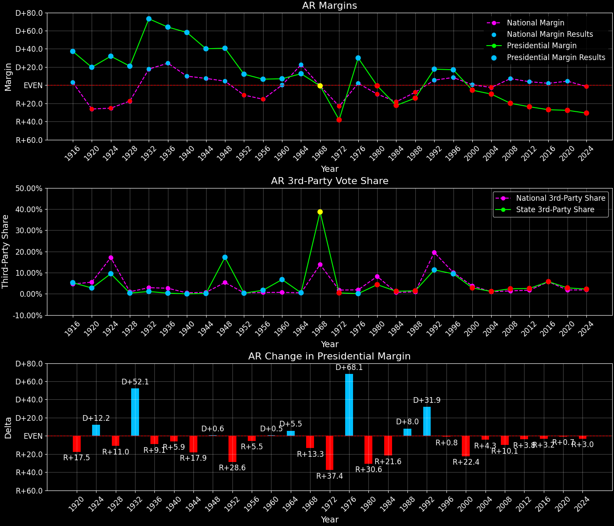
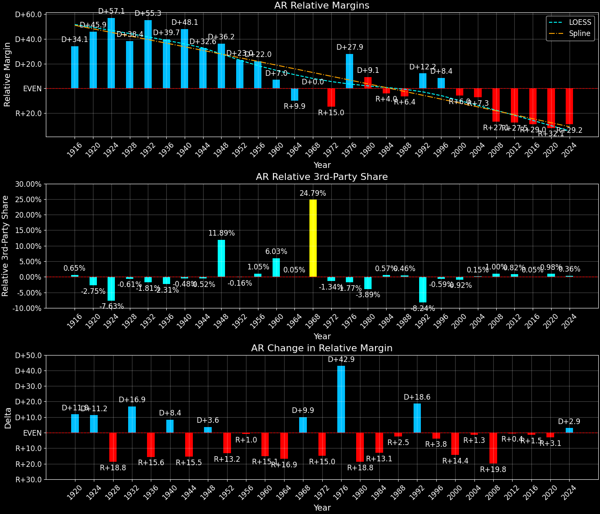
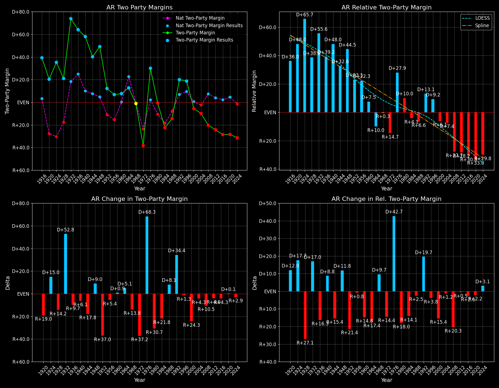

← Back to Map

Margins · 3rd-Party share · Pres. deltas

Relative margins · Relative 3rd-Party · Rel. deltas
Arkansas (AR) — Total Data
| Year | EVs | D | R | State Margin | Nat. Margin | Rel. Margin | Total votes |
|---|
| 1968 | 6 | 184,901(30.3%) | 189,062(31.0%) | R+0.7 | R+0.7 | D+0.0 | 609,590 |
| 1972 | 6 | 198,899(30.7%) | 445,751(68.8%) | R+38.1(Δ R+37.4) | R+23.1(Δ R+22.4) | R+15.0(Δ R+15.0) | 647,666 |
| 1976 | 6 | 499,614(64.9%) | 268,753(34.9%) | D+30.0(Δ D+68.1) | D+2.1(Δ D+25.2) | D+27.9(Δ D+42.9) | 769,396 |
| 1980 | 6 | 398,041(47.5%) | 403,164(48.1%) | R+0.6(Δ R+30.6) | R+9.7(Δ R+11.8) | D+9.1(Δ R+18.8) | 837,582 |
| 1984 | 6 | 338,646(38.3%) | 534,774(60.5%) | R+22.2(Δ R+21.6) | R+18.2(Δ R+8.5) | R+4.0(Δ R+13.1) | 884,406 |
| 1988 | 6 | 349,237(42.2%) | 466,578(56.4%) | R+14.2(Δ D+8.0) | R+7.7(Δ D+10.5) | R+6.4(Δ R+2.5) | 827,738 |
| 1992 | 6 | 505,823(53.2%) | 337,324(35.5%) | D+17.7(Δ D+31.9) | D+5.6(Δ D+13.3) | D+12.2(Δ D+18.6) | 950,653 |
| 1996 | 6 | 475,171(53.7%) | 325,416(36.8%) | D+16.9(Δ R+0.8) | D+8.5(Δ D+3.0) | D+8.4(Δ R+3.8) | 884,262 |
| 2000 | 6 | 422,768(45.9%) | 472,940(51.3%) | R+5.4(Δ R+22.4) | D+0.5(Δ R+8.0) | R+6.0(Δ R+14.4) | 921,781 |
| 2004 | 6 | 469,953(44.5%) | 572,898(54.3%) | R+9.8(Δ R+4.3) | R+2.5(Δ R+3.0) | R+7.3(Δ R+1.3) | 1,054,945 |
| 2008 | 6 | 422,310(38.9%) | 638,017(58.7%) | R+19.9(Δ R+10.1) | D+7.3(Δ D+9.7) | R+27.1(Δ R+19.8) | 1,086,617 |
| 2012 | 6 | 394,409(36.9%) | 647,744(60.6%) | R+23.7(Δ R+3.8) | D+3.9(Δ R+3.4) | R+27.5(Δ R+0.4) | 1,069,468 |
| 2016 | 6 | 380,494(33.7%) | 684,872(60.6%) | R+26.9(Δ R+3.2) | D+2.1(Δ R+1.8) | R+29.0(Δ R+1.5) | 1,130,676 |
| 2020 | 6 | 423,932(34.8%) | 760,647(62.4%) | R+27.6(Δ R+0.7) | D+4.5(Δ D+2.4) | R+32.1(Δ R+3.1) | 1,219,069 |
| 2024 | 6 | 396,905(33.6%) | 759,241(64.2%) | R+30.6(Δ R+3.0) | R+1.5(Δ R+5.9) | R+29.2(Δ D+2.9) | 1,182,676 |
Column explanations
- Δ
- Change (delta) in the value from the previous election year.
- Year
- Election year.
- EVs
- Number of electoral votes allocated to this state or unit.
- D
- Number of votes for the Democratic candidate (raw count(pct%)).
- R
- Number of votes for the Republican candidate (raw count(pct%)).
- State Margin
- Margin between the two major-party candidates, including third-party votes ((D - R)/total).
- Nat. Margin
- The national presidential margin for that year, including third-party votes ((D_total - R_total)/total_votes).
- Rel. Margin
- The presidential margin relative to the national presidential margin (Margin - Nat. Margin).
- Total votes
- Total voter turnout or ballots cast (when provided).
Arkansas (AR) — Third-Party Data
| Year | D | R | Other votes | State 3rd-Party Share | 3rd-Party Nat. Share | 3rd-Party Rel. Share |
|---|
| 1968 | 184,901(30.3%) | 189,062(31.0%) | 235,627(38.7%) | 38.65% | 13.86% | 24.79% |
| 1972 | 198,899(30.7%) | 445,751(68.8%) | 3,016(0.5%) | 0.47% | 1.80% | -1.34% |
| 1976 | 499,614(64.9%) | 268,753(34.9%) | 1,029(0.1%) | 0.13% | 1.90% | -1.77% |
| 1980 | 398,041(47.5%) | 403,164(48.1%) | 36,377(4.3%) | 4.34% | 8.24% | -3.89% |
| 1984 | 338,646(38.3%) | 534,774(60.5%) | 10,986(1.2%) | 1.24% | 0.67% | 0.57% |
| 1988 | 349,237(42.2%) | 466,578(56.4%) | 11,923(1.4%) | 1.44% | 0.98% | 0.46% |
| 1992 | 505,823(53.2%) | 337,324(35.5%) | 107,506(11.3%) | 11.31% | 19.55% | -8.24% |
| 1996 | 475,171(53.7%) | 325,416(36.8%) | 83,675(9.5%) | 9.46% | 10.05% | -0.59% |
| 2000 | 422,768(45.9%) | 472,940(51.3%) | 26,073(2.8%) | 2.83% | 3.75% | -0.92% |
| 2004 | 469,953(44.5%) | 572,898(54.3%) | 12,094(1.1%) | 1.15% | 1.00% | 0.15% |
| 2008 | 422,310(38.9%) | 638,017(58.7%) | 26,290(2.4%) | 2.42% | 1.42% | 1.00% |
| 2012 | 394,409(36.9%) | 647,744(60.6%) | 27,315(2.6%) | 2.55% | 1.73% | 0.82% |
| 2016 | 380,494(33.7%) | 684,872(60.6%) | 65,310(5.8%) | 5.78% | 5.73% | 0.05% |
| 2020 | 423,932(34.8%) | 760,647(62.4%) | 34,490(2.8%) | 2.83% | 1.84% | 0.98% |
| 2024 | 396,905(33.6%) | 759,241(64.2%) | 26,530(2.2%) | 2.24% | 1.88% | 0.36% |
Column explanations
- Year
- Election year.
- D
- Number of votes for the Democratic candidate (raw count(pct%)).
- R
- Number of votes for the Republican candidate (raw count(pct%)).
- Other votes
- Number of votes for third-party (other) candidates (raw count(pct%)).
- State 3rd-Party Share
- Share of the vote received by third-party (other) candidates.
- 3rd-Party Nat. Share
- The national third-party share for that year (3rd-Party votes / total votes).
- 3rd-Party Rel. Share
- Third-party share relative to the national third-party share (3rd-Party share - Nat. 3rd-Party share).

Two-party margins · relative · deltas
Arkansas (AR) — Two-Party Data
| Year | EVs | D | R | 2-Party Margin | 2-Party Nat. Margin | 2-Party Rel. Margin |
|---|
| 1968 | 6 | 184,901(49.4%) | 189,062(50.6%) | R+1.1 | R+0.8 | R+0.3 |
| 1972 | 6 | 198,899(30.9%) | 445,751(69.1%) | R+38.3(Δ R+37.2) | R+23.6(Δ R+22.8) | R+14.7(Δ R+14.4) |
| 1976 | 6 | 499,614(65.0%) | 268,753(35.0%) | D+30.0(Δ D+68.3) | D+2.1(Δ D+25.7) | D+27.9(Δ D+42.7) |
| 1980 | 6 | 398,041(49.7%) | 403,164(50.3%) | R+0.6(Δ R+30.7) | R+10.6(Δ R+12.7) | D+10.0(Δ R+18.0) |
| 1984 | 6 | 338,646(38.8%) | 534,774(61.2%) | R+22.5(Δ R+21.8) | R+18.3(Δ R+7.7) | R+4.1(Δ R+14.1) |
| 1988 | 6 | 349,237(42.8%) | 466,578(57.2%) | R+14.4(Δ D+8.1) | R+7.8(Δ D+10.5) | R+6.6(Δ R+2.5) |
| 1992 | 6 | 505,823(60.0%) | 337,324(40.0%) | D+20.0(Δ D+34.4) | D+6.9(Δ D+14.7) | D+13.1(Δ D+19.7) |
| 1996 | 6 | 475,171(59.4%) | 325,416(40.6%) | D+18.7(Δ R+1.3) | D+9.5(Δ D+2.6) | D+9.2(Δ R+3.8) |
| 2000 | 6 | 422,768(47.2%) | 472,940(52.8%) | R+5.6(Δ R+24.3) | D+0.5(Δ R+8.9) | R+6.1(Δ R+15.4) |
| 2004 | 6 | 469,953(45.1%) | 572,898(54.9%) | R+9.9(Δ R+4.3) | R+2.5(Δ R+3.0) | R+7.4(Δ R+1.2) |
| 2008 | 6 | 422,310(39.8%) | 638,017(60.2%) | R+20.3(Δ R+10.5) | D+7.4(Δ D+9.9) | R+27.7(Δ R+20.3) |
| 2012 | 6 | 394,409(37.8%) | 647,744(62.2%) | R+24.3(Δ R+4.0) | D+3.9(Δ R+3.4) | R+28.2(Δ R+0.5) |
| 2016 | 6 | 380,494(35.7%) | 684,872(64.3%) | R+28.6(Δ R+4.3) | D+2.2(Δ R+1.7) | R+30.8(Δ R+2.6) |
| 2020 | 6 | 423,932(35.8%) | 760,647(64.2%) | R+28.4(Δ D+0.1) | D+4.5(Δ D+2.3) | R+33.0(Δ R+2.2) |
| 2024 | 6 | 396,905(34.3%) | 759,241(65.7%) | R+31.3(Δ R+2.9) | R+1.5(Δ R+6.0) | R+29.8(Δ D+3.1) |
Column explanations
- Δ
- Change (delta) in the value from the previous election year.
- Year
- Election year.
- EVs
- Number of electoral votes allocated to this state or unit.
- D
- Number of votes for the Democratic candidate (raw count(pct%)).
- R
- Number of votes for the Republican candidate (raw count(pct%)).
- 2-Party Margin
- Margin between the two major-party candidates, ignoring third-party votes ((D - R)/(D + R)).
- 2-Party Nat. Margin
- The national presidential margin for that year, including third-party votes ((D_total - R_total)/total_votes).
- 2-Party Rel. Margin
- The presidential margin relative to the national presidential margin (Margin - Nat. Margin).